Question (2026-09-04): is there a corner layout in which the four encoder differential pairs have similar trace lengths? The phase connectors J1/J2 may move up (never sideways), everything else outside the corner is a wall. Today: A 13.4 B 15.9 C 25.6 D 24.7 — spread 12.2 mm (pair path J12 pin → TVS → mux switch → filter → transceiver, mean of P and N).
Instead of the settle engine (real copper, real DRC, minutes per run) this is an abstract model of the corner
(hardware/tools/enclayout/): the 62 movable bottom-side parts are courtyard rectangles with their pads; the walls are the fixed
bottom-side courtyards, every through-hole pad and via of a net that touches no movable part (the /D phase via farm, the sense lines,
J12's twelve pins, the XT30 pins and posts), the mounting-hole keepouts and the board edge. Fixed B.Cu tracks that cross the corner are soft
walls for pads. Copper of the movable nets is assumed re-routed, so it is not a wall.
A layout is scored by: courtyard/pad overlap (hard), the spread of the four pair path lengths (the thing routing cannot fix — a short pair can always be meandered longer, a long one cannot be shortened), the P/N mismatch inside each pair, the sum of the pair paths, the minimum-spanning-tree copper of every net on the movable pads (keeps stubs, pull-ups and hall parts close; control and data nets pull toward the right edge where they leave the corner), decoupling caps within 1.5 mm of a chip on their rail, and a small price on moving the connectors.
Simulated annealing over part positions and 90° rotations (single-part moves, same-footprint swaps, snap-to-partner moves, rigid moves of a whole
channel, and the connector slide), 120 k steps per start, 28 starts in parallel from named arrangements (rows: four chains left from
the header; rows_dpk: D into the pocket under the via farm; hat_cd: D over the top of J12; a_up, fan,
column, current, and random). About two minutes per batch on 24 cores.
Packing rules in the model: courtyards may not overlap (0.1 mm guard); pads keep 0.2 mm from every fixed annulus, via and fixed track; bodies keep off through-hole annuli entirely (a bottom-side body on a solder joint is not a placement) and off the mounting-hole rings; 0.45 mm courtyard margin to the board edge. Sliding J1/J2 up is priced by the new conflicts the XT30 pins create with fixed copper on any layer — chiefly the /A_P and A/B_PHASE_SENSE lines on In2 that run just above J1's second pin — so a candidate that moves the connectors also lists what would have to be re-routed by hand.
Path lengths are straight pad-to-pad distances along the chain — a floor, not a route; real copper will be ~1.2–1.4× longer. Magenta outline = a part the annealer could not fully clear (residual overlap in the score). The figure shows the bottom side seen from the top (x as on the board), J1/J2 are dotted because they are on the top side.
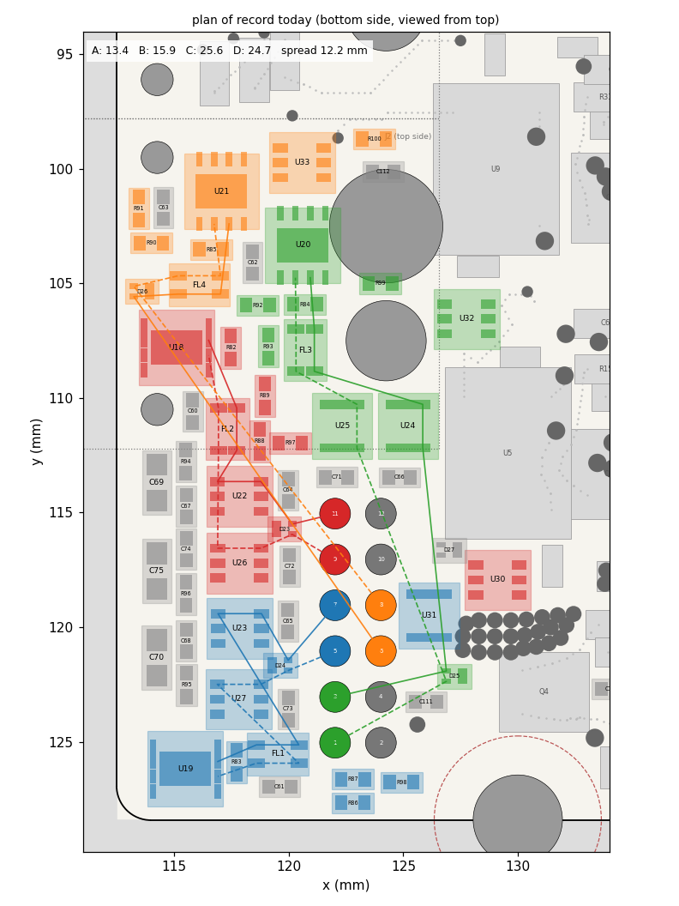
Yes — all four pairs can sit at 13–15 mm from the header, and the connectors do not need to move.
Four batches (96 annealed starts; r1 is not shown: its weights let the annealer "equalise" by making everything 20–30 mm long, which is why the score
now penalises the longest pair, not just the spread). Two candidates are written out as boards
(hardware/tools/enclayout/candidates/, corner copper stripped, parts placed, 265 airwires to route):
Today the floors are A 13.4 · B 15.9 · C 25.6 · D 24.7 (spread 12.2): C and D were long because their chains were homed at the top of the section, not because the corner lacks room. The connector slide buys nothing: every start was free to move J1/J2 up to 1.2 mm, the polished results settle at 0–0.06 mm. The chains' walls are J12's own pin columns, U5 and the /D via farm, not J2; and moving the stack 0.5 mm already pushes J1's second pin into the /A_P and A_PHASE_SENSE lines on In2 (which the slide term prices). What it would take to land either candidate: route the 265 airwires of the corner (the pair paths, the switch controls, the GND/+3V3/Vdrive drops), then the settle gate. Path floors are pad-to-pad; routed copper will be longer and the two switch-less channel-D hops give the router the slack to trim D to the others.
| run | start | cost | overlap | spread | A | B | C | D | P/N mism. | sum | conn. up | parts w/ overlap |
|---|---|---|---|---|---|---|---|---|---|---|---|---|
| r2 | a_up_11_10 | 208.1 | 0.037 | 1.3 | 14.7 | 13.4 | 14.5 | 14.6 | 1.3 | 57.1 | 0.25 | 3 |
| r3 | fan_103_3 | 221.6 | 0.189 | 0.0 | 19.5 | 19.5 | 19.4 | 19.5 | 1.0 | 77.8 | 0.38 | 6 |
| r4 | r2-current_12_1_406_6 | 222.7 | 0.000 | 1.2 | 17.5 | 18.6 | 18.1 | 17.4 | 1.6 | 71.5 | 0.06 | 0 |
| r2 | hat_cd_13_9 | 223.0 | 0.015 | 6.1 | 16.7 | 19.9 | 13.8 | 14.1 | 1.7 | 64.5 | 0.40 | 4 |
| r4 | r2-current_12_1_407_7 | 224.6 | 0.000 | 0.4 | 17.9 | 18.3 | 18.3 | 18.3 | 2.8 | 72.8 | 0.00 | 0 |
| r4 | r2-a_up_11_10_400_0 | 225.1 | 0.160 | 1.6 | 14.6 | 13.0 | 13.6 | 14.3 | 2.4 | 55.5 | 0.00 | 2 |
| r4 | fan_504_24 | 228.8 | 0.001 | 1.8 | 19.5 | 19.4 | 18.3 | 17.7 | 0.3 | 74.9 | 0.00 | 0 |
| r4 | r2-hat_cd_13_9_403_3 | 229.1 | 0.017 | 6.0 | 16.8 | 20.3 | 15.2 | 14.3 | 2.5 | 66.6 | 0.29 | 1 |
| r4 | r2-current_11_0_404_4 | 230.0 | 0.000 | 1.1 | 17.5 | 18.2 | 18.6 | 17.7 | 3.4 | 72.0 | 0.00 | 0 |
| r2 | current_11_0 | 231.0 | 0.004 | 0.3 | 18.2 | 18.5 | 18.5 | 18.2 | 1.4 | 73.3 | 0.37 | 1 |
| r2 | current_12_1 | 233.6 | 0.006 | 0.9 | 19.6 | 19.9 | 19.3 | 19.0 | 1.1 | 77.7 | 0.57 | 2 |
| r3 | a_up_202_10 | 236.1 | 0.042 | 1.8 | 18.0 | 16.1 | 17.4 | 17.7 | 2.9 | 69.2 | 0.00 | 3 |
| r2 | random_11_16 | 236.4 | 0.097 | 1.6 | 18.0 | 19.6 | 18.0 | 19.4 | 2.1 | 75.0 | 1.09 | 3 |
| r3 | rows_100_0 | 236.6 | 0.100 | 0.1 | 19.1 | 19.1 | 19.1 | 19.1 | 10.3 | 76.4 | 1.08 | 3 |
| r2 | rows_13_4 | 243.3 | 0.004 | 1.0 | 18.9 | 19.3 | 19.9 | 18.9 | 0.4 | 77.0 | 0.85 | 1 |
| r3 | column_104_4 | 243.5 | 0.070 | 0.1 | 22.9 | 23.0 | 23.0 | 23.0 | 0.5 | 91.9 | 0.88 | 2 |
| r3 | random_305_21 | 245.1 | 0.004 | 1.7 | 19.3 | 21.0 | 19.4 | 21.0 | 3.5 | 80.6 | 1.20 | 1 |
| r3 | fan_303_19 | 247.2 | 0.073 | 0.0 | 18.6 | 18.6 | 18.6 | 18.6 | 1.9 | 74.5 | 0.14 | 4 |
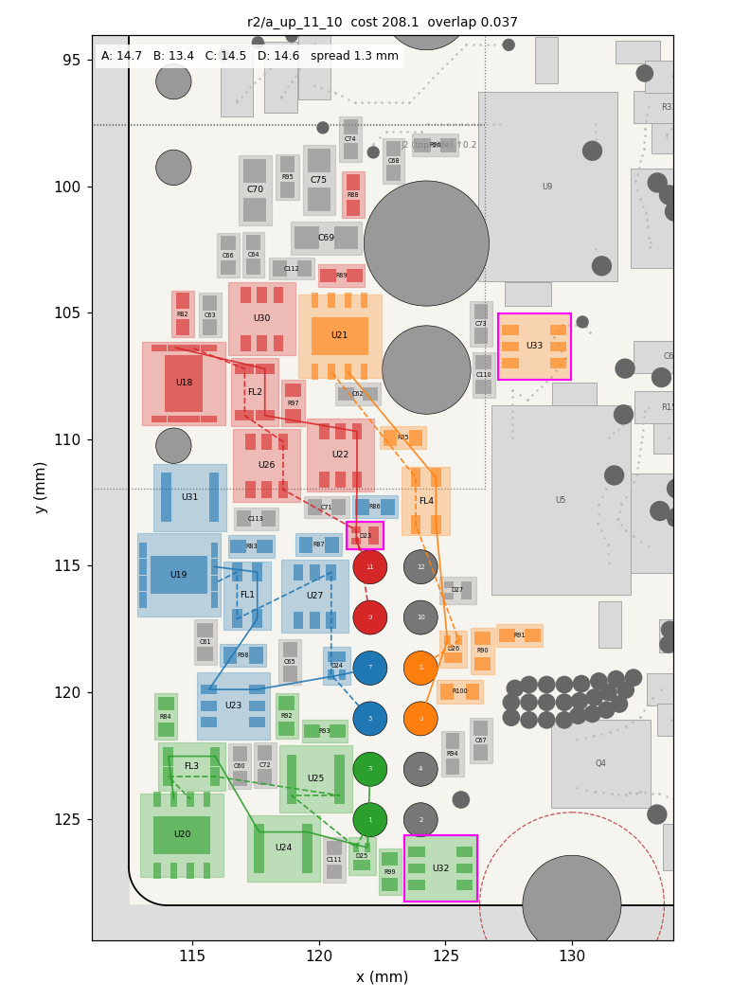
| ch | P | N | mean |
|---|---|---|---|
| A | 14.7 | 14.6 | 14.7 |
| B | 13.4 | 13.4 | 13.4 |
| C | 14.5 | 14.5 | 14.5 |
| D | 15.2 | 14.0 | 14.6 |
spread 1.3 mm · sum 57.1 · P/N mismatch 1.3 · pair copper (MST) 136 ·
connectors up 0.25 mm · overlap score 0.037
parts with residual overlap: U32 0.03, U33 0.01, D23 0.00
connector slide touches fixed copper: A_PHASE_SENSE (13 pts), /A_P (10 pts)
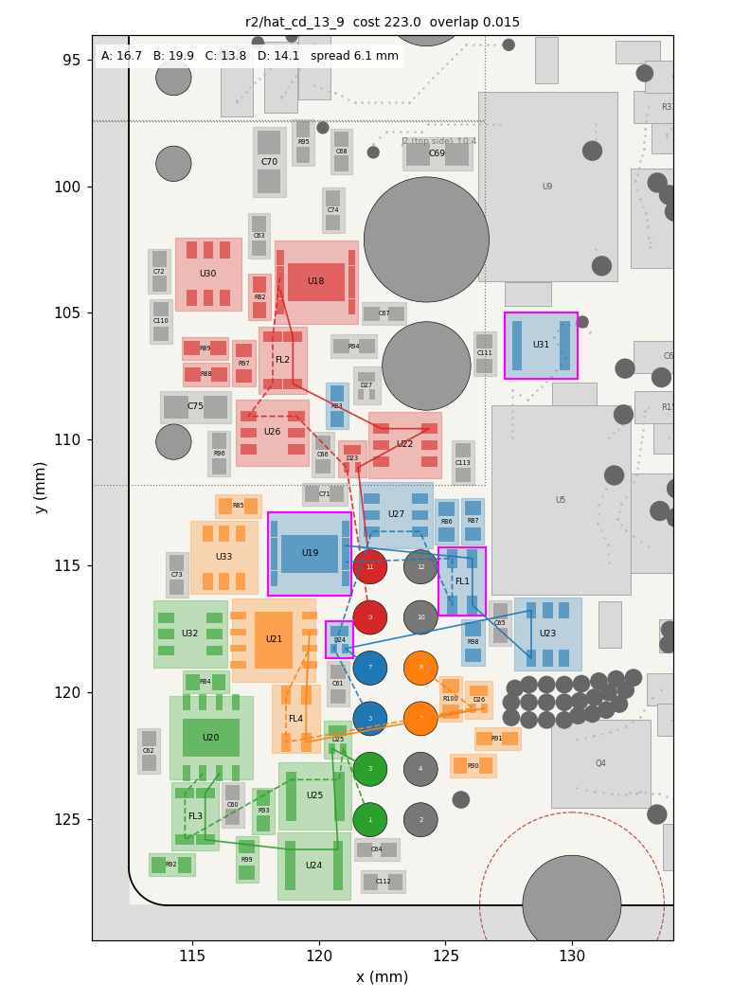
| ch | P | N | mean |
|---|---|---|---|
| A | 16.7 | 16.7 | 16.7 |
| B | 20.7 | 19.1 | 19.9 |
| C | 13.8 | 13.9 | 13.8 |
| D | 14.1 | 14.1 | 14.1 |
spread 6.1 mm · sum 64.5 · P/N mismatch 1.7 · pair copper (MST) 142 ·
connectors up 0.40 mm · overlap score 0.015
parts with residual overlap: U31 0.01, D24 0.00, U19 0.00, FL1 0.00
connector slide touches fixed copper: A_PHASE_SENSE (15 pts), /A_P (16 pts)
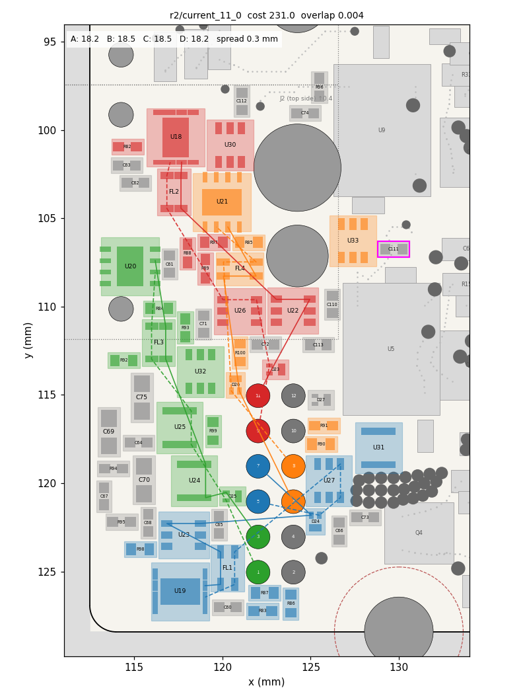
| ch | P | N | mean |
|---|---|---|---|
| A | 18.2 | 18.2 | 18.2 |
| B | 18.5 | 18.5 | 18.5 |
| C | 18.2 | 18.7 | 18.5 |
| D | 18.6 | 17.7 | 18.2 |
spread 0.3 mm · sum 73.3 · P/N mismatch 1.4 · pair copper (MST) 158 ·
connectors up 0.37 mm · overlap score 0.004
parts with residual overlap: C111 0.00
connector slide touches fixed copper: A_PHASE_SENSE (14 pts), /A_P (16 pts)
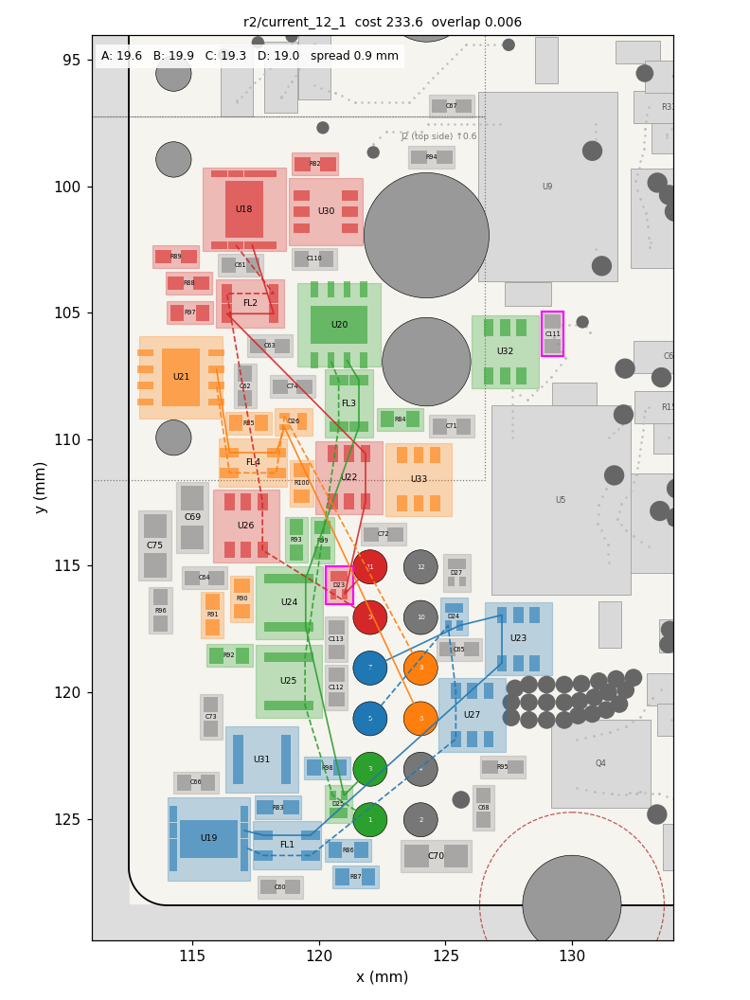
| ch | P | N | mean |
|---|---|---|---|
| A | 19.6 | 19.6 | 19.6 |
| B | 20.4 | 19.4 | 19.9 |
| C | 19.3 | 19.3 | 19.3 |
| D | 19.0 | 18.9 | 19.0 |
spread 0.9 mm · sum 77.7 · P/N mismatch 1.1 · pair copper (MST) 160 ·
connectors up 0.57 mm · overlap score 0.006
parts with residual overlap: C111 0.00, D23 0.00
connector slide touches fixed copper: A_PHASE_SENSE (16 pts), /A_P (21 pts)
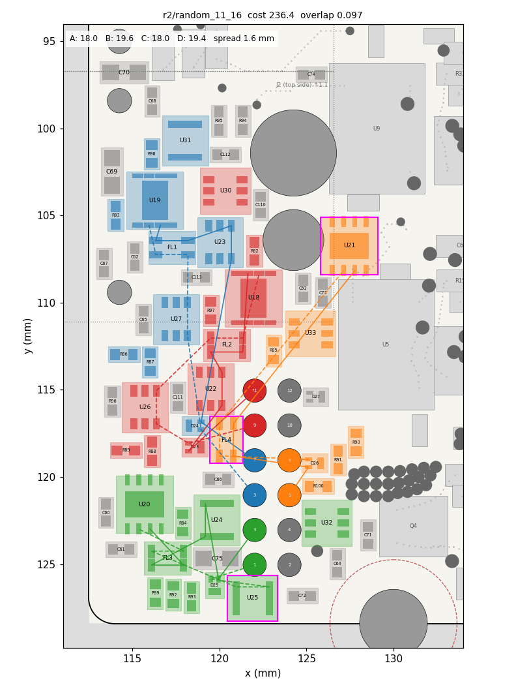
| ch | P | N | mean |
|---|---|---|---|
| A | 18.0 | 18.0 | 18.0 |
| B | 20.6 | 18.6 | 19.6 |
| C | 18.0 | 18.0 | 18.0 |
| D | 19.4 | 19.4 | 19.4 |
spread 1.6 mm · sum 75.0 · P/N mismatch 2.1 · pair copper (MST) 160 ·
connectors up 1.09 mm · overlap score 0.097
parts with residual overlap: U21 0.06, U25 0.03, FL4 0.00
connector slide touches fixed copper: /C_P (11 pts), A_PHASE_SENSE (20 pts), B_PHASE_SENSE (8 pts), /A_P (35 pts)
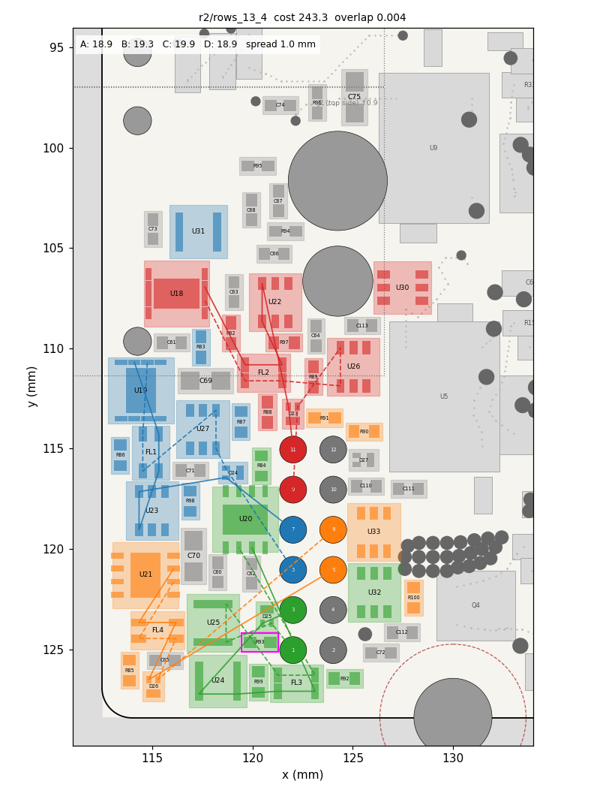
| ch | P | N | mean |
|---|---|---|---|
| A | 18.9 | 18.9 | 18.9 |
| B | 19.3 | 19.3 | 19.3 |
| C | 20.1 | 19.7 | 19.9 |
| D | 18.9 | 18.9 | 18.9 |
spread 1.0 mm · sum 77.0 · P/N mismatch 0.4 · pair copper (MST) 178 ·
connectors up 0.85 mm · overlap score 0.004
parts with residual overlap: R93 0.00
connector slide touches fixed copper: /C_P (4 pts), A_PHASE_SENSE (18 pts), /A_P (32 pts)
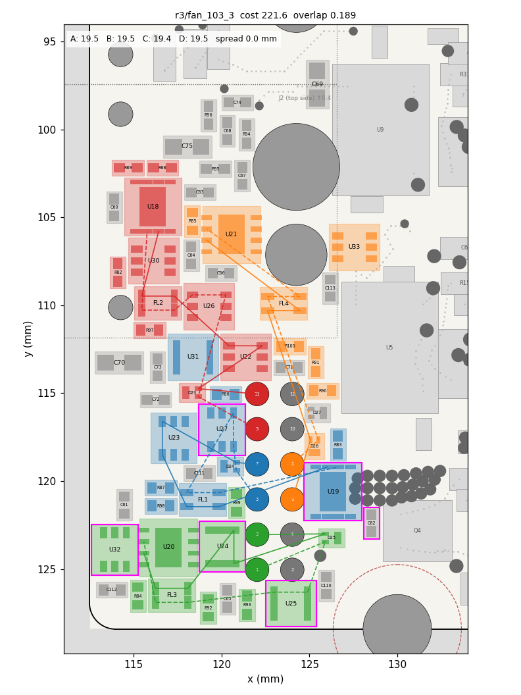
| ch | P | N | mean |
|---|---|---|---|
| A | 19.5 | 19.4 | 19.5 |
| B | 19.6 | 19.4 | 19.5 |
| C | 19.4 | 19.4 | 19.4 |
| D | 19.8 | 19.1 | 19.5 |
spread 0.0 mm · sum 77.8 · P/N mismatch 1.0 · pair copper (MST) 155 ·
connectors up 0.38 mm · overlap score 0.189
parts with residual overlap: U19 0.13, U25 0.03, U32 0.02, U24 0.01, C62 0.00, U27 0.00
connector slide touches fixed copper: A_PHASE_SENSE (14 pts), /A_P (16 pts)
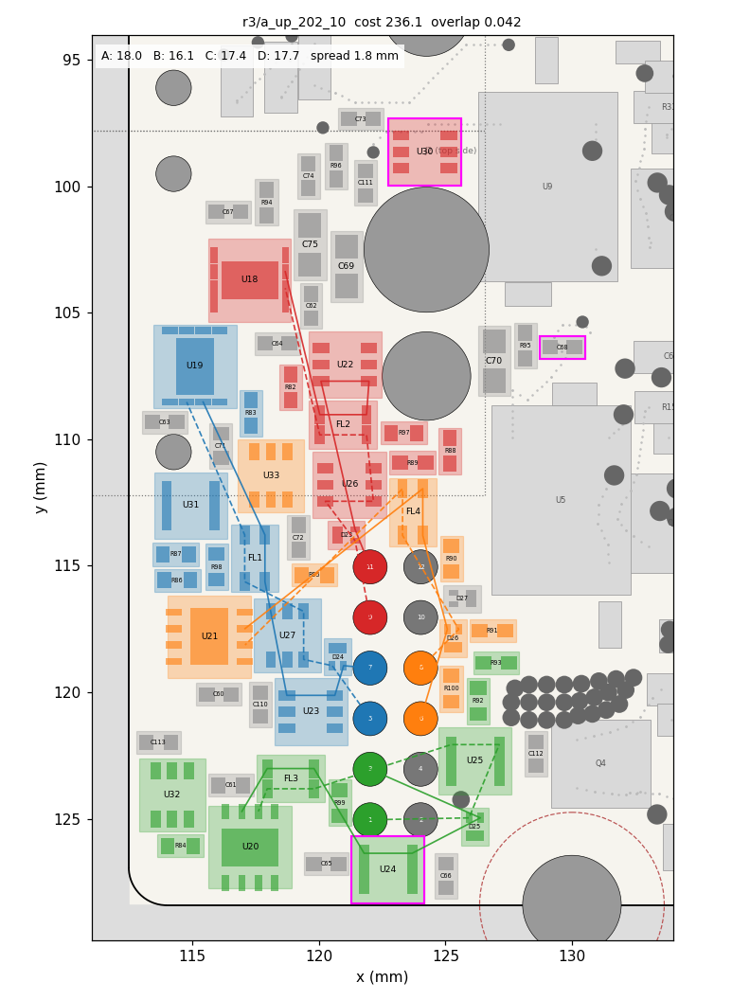
| ch | P | N | mean |
|---|---|---|---|
| A | 18.5 | 17.4 | 18.0 |
| B | 16.4 | 15.8 | 16.1 |
| C | 17.4 | 17.5 | 17.4 |
| D | 18.3 | 17.1 | 17.7 |
spread 1.8 mm · sum 69.2 · P/N mismatch 2.9 · pair copper (MST) 142 ·
connectors up 0.00 mm · overlap score 0.042
parts with residual overlap: U24 0.04, U30 0.00, C68 0.00
connector slide touches nothing fixed
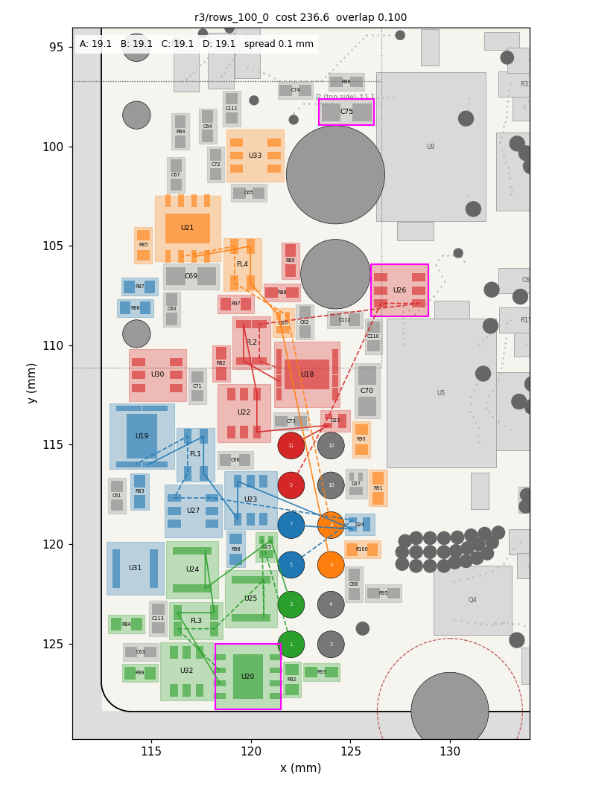
| ch | P | N | mean |
|---|---|---|---|
| A | 15.1 | 23.1 | 19.1 |
| B | 19.1 | 19.1 | 19.1 |
| C | 18.5 | 19.6 | 19.1 |
| D | 19.7 | 18.5 | 19.1 |
spread 0.1 mm · sum 76.4 · P/N mismatch 10.3 · pair copper (MST) 162 ·
connectors up 1.08 mm · overlap score 0.100
parts with residual overlap: U20 0.09, C75 0.00, U26 0.00
connector slide touches fixed copper: /C_P (10 pts), A_PHASE_SENSE (20 pts), B_PHASE_SENSE (8 pts), /A_P (35 pts)
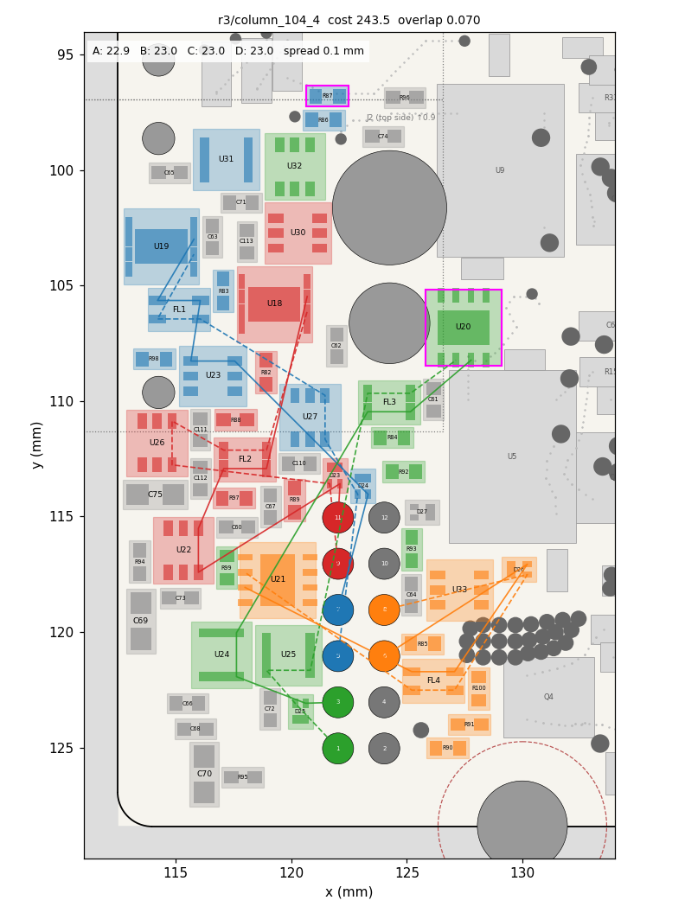
| ch | P | N | mean |
|---|---|---|---|
| A | 22.9 | 22.9 | 22.9 |
| B | 22.8 | 23.1 | 23.0 |
| C | 22.9 | 23.0 | 23.0 |
| D | 22.9 | 23.0 | 23.0 |
spread 0.1 mm · sum 91.9 · P/N mismatch 0.5 · pair copper (MST) 196 ·
connectors up 0.88 mm · overlap score 0.070
parts with residual overlap: U20 0.06, R87 0.00
connector slide touches fixed copper: /C_P (5 pts), A_PHASE_SENSE (18 pts), /A_P (32 pts)
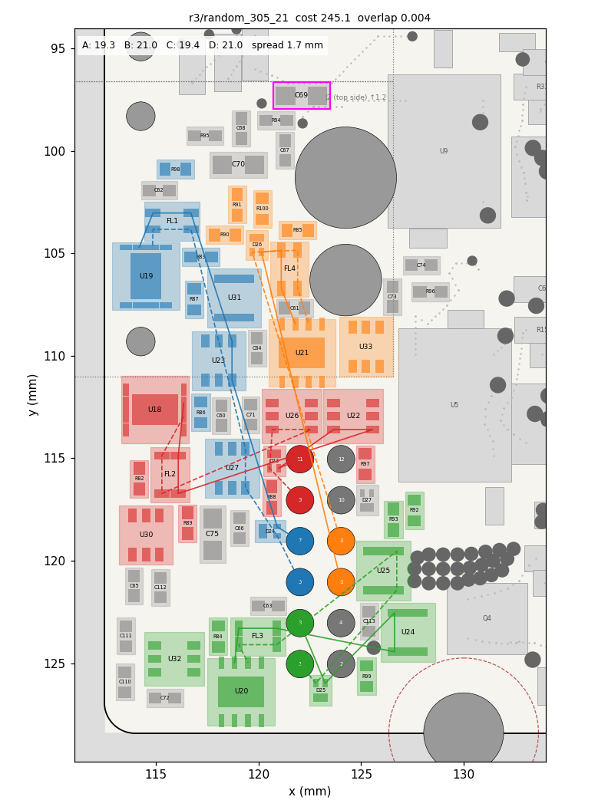
| ch | P | N | mean |
|---|---|---|---|
| A | 20.7 | 17.9 | 19.3 |
| B | 20.9 | 21.0 | 21.0 |
| C | 19.3 | 19.4 | 19.4 |
| D | 21.3 | 20.7 | 21.0 |
spread 1.7 mm · sum 80.6 · P/N mismatch 3.5 · pair copper (MST) 169 ·
connectors up 1.20 mm · overlap score 0.004
parts with residual overlap: C69 0.00
connector slide touches fixed copper: /C_P (12 pts), A_PHASE_SENSE (20 pts), B_PHASE_SENSE (10 pts), /A_P (35 pts)
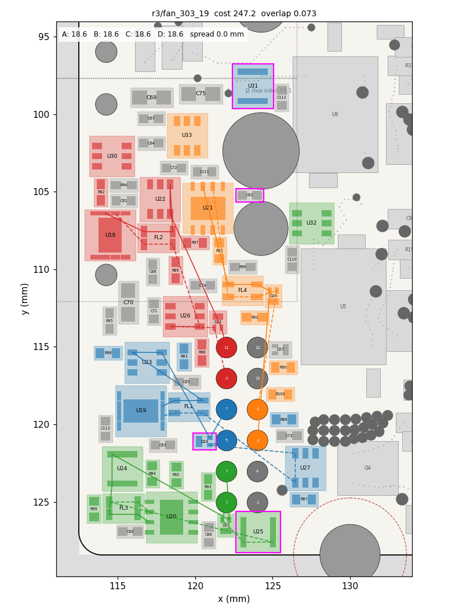
| ch | P | N | mean |
|---|---|---|---|
| A | 18.9 | 18.3 | 18.6 |
| B | 18.6 | 18.7 | 18.6 |
| C | 18.4 | 18.8 | 18.6 |
| D | 19.0 | 18.2 | 18.6 |
spread 0.0 mm · sum 74.5 · P/N mismatch 1.9 · pair copper (MST) 182 ·
connectors up 0.14 mm · overlap score 0.073
parts with residual overlap: C62 0.04, U25 0.03, D24 0.00, U31 0.00
connector slide touches fixed copper: A_PHASE_SENSE (8 pts), /A_P (4 pts)
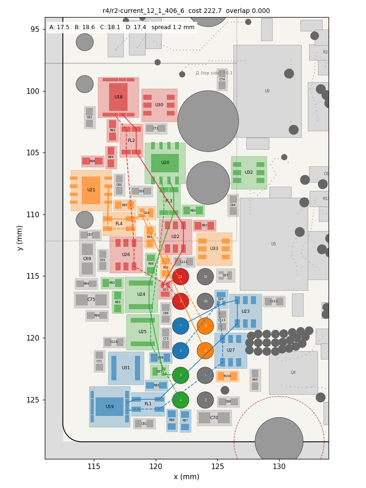
| ch | P | N | mean |
|---|---|---|---|
| A | 17.5 | 17.5 | 17.5 |
| B | 18.5 | 18.7 | 18.6 |
| C | 17.6 | 18.5 | 18.1 |
| D | 17.6 | 17.1 | 17.4 |
spread 1.2 mm · sum 71.5 · P/N mismatch 1.6 · pair copper (MST) 147 ·
connectors up 0.06 mm · overlap score 0.000
parts with residual overlap: none
connector slide touches fixed copper: A_PHASE_SENSE (2 pts)
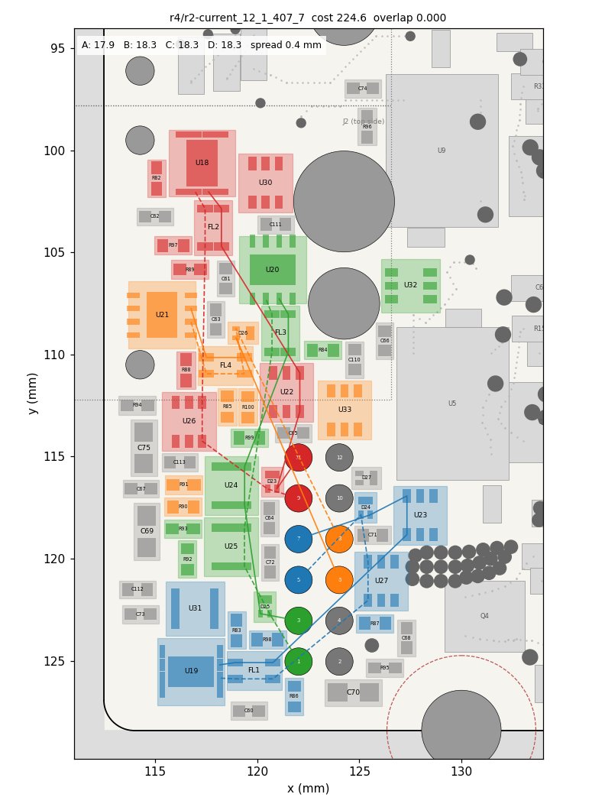
| ch | P | N | mean |
|---|---|---|---|
| A | 17.9 | 17.9 | 17.9 |
| B | 19.3 | 17.3 | 18.3 |
| C | 17.9 | 18.6 | 18.3 |
| D | 18.3 | 18.3 | 18.3 |
spread 0.4 mm · sum 72.8 · P/N mismatch 2.8 · pair copper (MST) 151 ·
connectors up 0.00 mm · overlap score 0.000
parts with residual overlap: none
connector slide touches nothing fixed
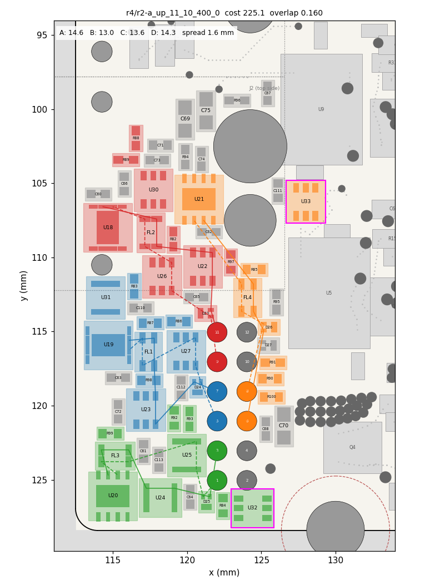
| ch | P | N | mean |
|---|---|---|---|
| A | 14.8 | 14.4 | 14.6 |
| B | 13.0 | 13.0 | 13.0 |
| C | 13.9 | 13.3 | 13.6 |
| D | 15.0 | 13.6 | 14.3 |
spread 1.6 mm · sum 55.5 · P/N mismatch 2.4 · pair copper (MST) 132 ·
connectors up 0.00 mm · overlap score 0.160
parts with residual overlap: U32 0.13, U33 0.03
connector slide touches nothing fixed
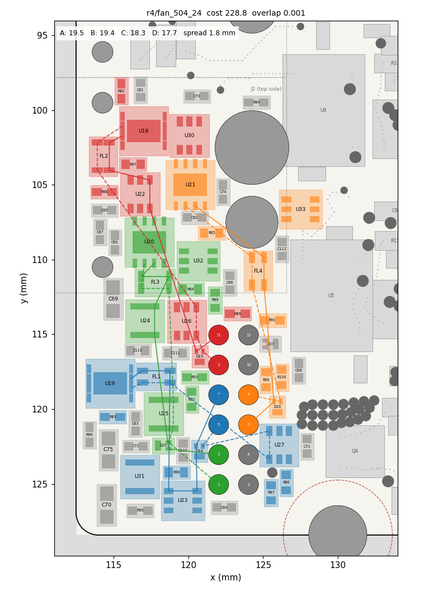
| ch | P | N | mean |
|---|---|---|---|
| A | 19.4 | 19.6 | 19.5 |
| B | 19.5 | 19.4 | 19.4 |
| C | 18.3 | 18.3 | 18.3 |
| D | 17.7 | 17.7 | 17.7 |
spread 1.8 mm · sum 74.9 · P/N mismatch 0.3 · pair copper (MST) 155 ·
connectors up 0.00 mm · overlap score 0.001
parts with residual overlap: none
connector slide touches nothing fixed
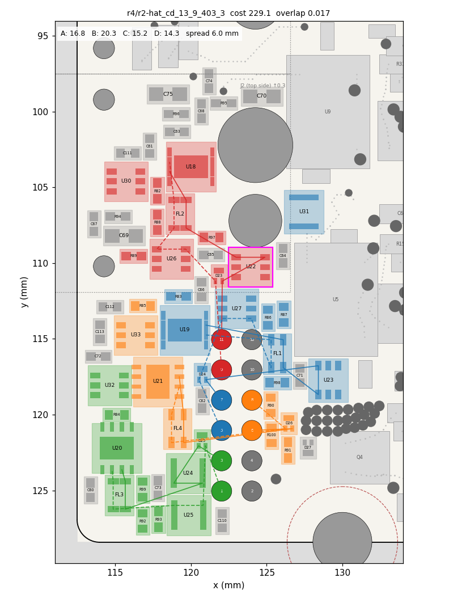
| ch | P | N | mean |
|---|---|---|---|
| A | 16.8 | 16.8 | 16.8 |
| B | 21.1 | 19.6 | 20.3 |
| C | 14.7 | 15.7 | 15.2 |
| D | 14.3 | 14.3 | 14.3 |
spread 6.0 mm · sum 66.6 · P/N mismatch 2.5 · pair copper (MST) 137 ·
connectors up 0.29 mm · overlap score 0.017
parts with residual overlap: U22 0.02
connector slide touches fixed copper: A_PHASE_SENSE (13 pts), /A_P (13 pts)
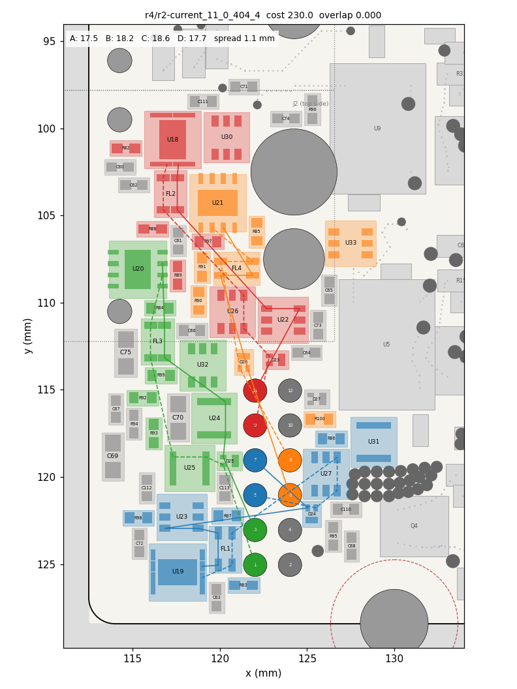
| ch | P | N | mean |
|---|---|---|---|
| A | 17.5 | 17.5 | 17.5 |
| B | 18.2 | 18.2 | 18.2 |
| C | 17.5 | 19.7 | 18.6 |
| D | 18.3 | 17.1 | 17.7 |
spread 1.1 mm · sum 72.0 · P/N mismatch 3.4 · pair copper (MST) 150 ·
connectors up 0.00 mm · overlap score 0.000
parts with residual overlap: none
connector slide touches nothing fixed